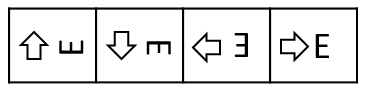

<!DOCTYPE html>
<html>

<head>
    <title>Jspsych Webcam Recording Template</title>
    <script src="custom_jspsych/jspsych.js"></script>
    <script src="custom_jspsych/plugin-html-keyboard-response.js"></script>
    <script src="custom_jspsych/plugin-external-html.js"></script>
    <script src="custom_jspsych/plugin-browser-check.js"></script>
    <script src="custom_jspsych/plugin-virtual-chinrest.js"></script>
    <script src="custom_jspsych/plugin-distance-calib.js"></script>
    <script src="custom_jspsych/plugin-fullscreen.js"></script>
    <script src="custom_jspsych/plugin-html-button-response.js"></script>
    <script src="custom_jspsych/extension-webcam-record.js"></script>
    <script src="custom_jspsych/plugin-webcam-setup.js"></script>
    <script src="custom_jspsych/plugin-fix-point-calibration.js"></script>
    <script src="custom_jspsych/plugin-smooth-pursuit-calibration.js"></script>
    <link href="custom_jspsych/jspsych.css" rel="stylesheet" type="text/css" />
</head>

<body></body>
<script>

//Define global const variables
const PIXELS_PER_DEG = 50; //the code uses arbritary pixel units which are interpreted in visual degrees to present all stimuli
//Present all stimuli on a window size of 29.6 x 16.65 visual degrees represented in pixels as below. Change the pixel values to change window size.
const WIN_HEIGHT = 830;
const WIN_WIDTH = 1480;
const SMOOTH_PURSUIT_ANIMATION_DURATION = 10000; //time (in ms) taken by the SP calibration target to complete the path

// Store all console logs and send it to the server at the end of experiment
console.stdlog = console.log.bind(console);
console.logs = [];
console.log = function() {
    console.logs.push(Array.from(arguments));
    console.stdlog.apply(console, arguments);
}

async function request_file(file_name, parseJSON = false) {
    try {
        let resp;
        const response = await fetch(file_name);
        if (parseJSON) {
            resp = await response.json();
        } else {
            resp = await response.text()
        }
        return resp;
    } catch (error) {
        console.error("Error loading files:", error);
        return null;
    }
}

// Function to create an overlay when experiment exits fullscreen
function handleFullscreenOverlay() {
    const event = document.isFullScreen || document.webkitIsFullScreen || document.mozIsFullScreen || document.fullscreenElement
            ? "fullscreenenter"
            : "fullscreenexit";

    if (event == "fullscreenexit") {
        const overlayDiv = document.createElement('div');
        overlayDiv.id ='fullscreen-overlay'
        overlayDiv.classList.add("custom-fullscreen-overlay")
        overlayDiv.innerHTML = `<center>
        <p> Experiment paused. </br> Please return to full screen to continue with the experiment. </p> 
        <button id="fullscreen-btn"> Return to fullscreen </button>
        </center>`;

        overlayDiv.querySelector("#fullscreen-btn").addEventListener('click', function () {
            const element = document.documentElement;
            if (element.requestFullscreen) {
                element.requestFullscreen();
            } else if (element.mozRequestFullScreen) {
                element.mozRequestFullScreen();
            } else if (element.webkitRequestFullscreen) {
                element.webkitRequestFullscreen();
            } else if (element.msRequestFullscreen) {
                element.msRequestFullscreen();
            }
        }); //request Fullscreen from the browser

        document.body.appendChild(overlayDiv); //display Overlay
    }
    else if (event == "fullscreenenter"){

        const overlayDiv = document.getElementById('fullscreen-overlay'); // Replace 'overlay' with the actual ID of your div
        // Check if the overlay div exists in the DOM
        if (overlayDiv) {
            overlayDiv.parentNode.removeChild(overlayDiv); // Remove the overlay div from the DOM
        }
    }
};
//add event handlers for when full screen is exited.
document.addEventListener("fullscreenchange", handleFullscreenOverlay);
document.addEventListener("mozfullscreenchange", handleFullscreenOverlay);
document.addEventListener("webkitfullscreenchange", handleFullscreenOverlay);


/* Initialize JsPsych */
var jsPsych;
var upload_counter = 0; //counter for data checkpoints
function createJsPsych() {
    return initJsPsych({

        on_finish: (data, end_message="") => {
                //remove fullScreenEventListeners 
                document.removeEventListener("fullscreenchange", handleFullscreenOverlay);
                document.removeEventListener("mozfullscreenchange", handleFullscreenOverlay);
                document.removeEventListener("webkitfullscreenchange", handleFullscreenOverlay);
            },

        // add Webcam extension to the experiment
        extensions: [{
            type: jsPsychWebcamRecord,
            params: {
                "using_setup_plugin": true,
                "default_camera_options": true,
            }
        }],
    });
};


//initialize jsPsych  
jsPsych = createJsPsych()

/* create device check trial to exclude mobile phones amd Safari browser */
const setup_device_check = {
    //stores ["width", "height", "webaudio", "browser", "browser_version", "mobile", "os", "fullscreen", "vsync_rate", "webcam", "microphone"] to data

    type: jsPsychBrowserCheck,
    vsync_frame_count: 120,
    inclusion_function: (data) => {
        return data.mobile === false && ['chrome', 'firefox', 'edge-chromium'].includes(data.browser);
    },
    exclusion_message: (data) => {
        if (data.mobile) {
                console.log("##EXITING BECAUSE MOBILE");
                alert("You must use a desktop/laptop with a front facing webcam to participate in this experiment.");
            return '<p> You must use a desktop/laptop with a front facing webcam to participate in this experiment. </p>'
        } else if (!['chrome', 'firefox', 'edge-chromium'].includes(data.browser)) {
                console.log("##EXITING BECAUSE SAFARI");
                alert("You must use Chrome, Edge or Firefox as your browser to complete this experiment.");
                return '<p> You must use Chrome, Edge or Firefox as your browser to complete this experiment. </p>'
        }
    },
    data: {trial_link: "setup_device_check"}
};

/* Create webcam trial to setup webcam recording parameters */
const setup_webcam = {
    type: jsPsychWebcamSetup,
    instructions: `<p> Throughout the experiment, we will use the webcam to track where your eyes are on the screen. <br>
                            Make sure that your face is completely visible and centered in the above frame. <br>
                            Before proceding to the experiment, it is important that you confirm the following: <br>
                            <ul><li> You are seated in a well-lit room. </li>
                        <li> There is no light source (e.g. window, lamp) behind you. </li> 
                        <li> Your face is illuminated from the front. </li>
                        <li> Nothing is covering your face (e.g. medical mask, hands). Please make sure not to rest your head on your hands during the experiment.</li></ul>
                        </p>
                                <p>Select the internal webcam device from the drop down list and press Next to proceed when you're ready.</p>`,
    data: {trial_link: "setup_webcam"}
};

/* Create initial consent trial */ 
const form_consent = {
    type: jsPsychHtmlButtonResponse,
    stimulus: '<h1>Welcome to the experiment.</h1> Please press the next button to provide consent to video recording using your webcam.',
    choices: ["Next"]
}

/* Create fullscreen trial*/
const setup_fullscreen = {
    type: jsPsychFullscreen,
    fullscreen_mode: true,
    message: `<h4> Ready to begin! </h4> <p>The experiment will now switch to full screen mode when you press the button below. <br> Please note that during the experiment you should not press the escape (Esc) key or use the "backward" button in your browser.<br> Such actions could lead to an immediate termination of the experiment. </p>`,
    button_label: "I agree",  
    data: {trial_link: "setup_fullscreen"}
};

//fix-point calibration helper function 
function drawE(c, target, location, text_size, degree = 0) {
    let ctx = c.getContext("2d");
    ctx.clearRect(0, 0, c.width, c.height)
    ctx.save()
    ctx.translate(location[0], location[1]);
    ctx.rotate((degree * Math.PI) / 180)
    ctx.translate(-location[0], -location[1]);
    ctx.textAlign = "center";
    ctx.textBaseline = "middle";
    ctx.font = text_size + "px Arial";
    ctx.fillText(target, location[0], location[1]);
    ctx.restore()
};

//create fix-point calibration trial
function createE_calib(fname) {
    return {
        type: FixPointCalibration,
        stimulus: drawE,
        canvas_size: [WIN_HEIGHT, WIN_WIDTH],
        target_size: 20, //0.4 visual degrees
        // data: {direction: trial_directions}
        extensions: [{ type: jsPsychWebcamRecord, params: { filename: fname } }],
        data: {trial_link: "E_calib"}
    };
}

//create smooth pursuit calibratin trial
function createSP_calib(fname) {
    return {
        type: SmoothPursuitCalibration,
        stimulus: "assets/SP_target.png",
        animation_duration: SMOOTH_PURSUIT_ANIMATION_DURATION,
        path_height: (WIN_HEIGHT - 20 - 25), //WIN_HEIGHT-2*path_margin-stimulus_height
        path_width: (WIN_WIDTH - 20 - 25), //WIN_WIDTH-2*path_margin-stimulus_width
        path_margin: 10,
        stimulus_height: (0.5 * PIXELS_PER_DEG), //0.5 vis degree
        stimulus_width: (0.5 * PIXELS_PER_DEG),
        extensions: [{ type: jsPsychWebcamRecord, params: { filename: fname } }],
        data: {trial_link: "SP_calib"}
    };
}


let timeline = [];

/* start experiment with consent form */
timeline.push(form_consent);

/* Load experiment */
console.log("##performing browser check")
timeline.push(setup_device_check);
console.log("##setting up webcam extension")
timeline.push(setup_webcam);

/* Switch to full screen */
console.log("##enabling full screen")
timeline.push(setup_fullscreen);


/* Create timeline tasks here */

/* Device Calibration*/
const setup_dev_calib = {
    type: jsPsychVirtualChinrest,
    blindspot_reps: 2,
    resize_units: "deg",
    pixels_per_unit: PIXELS_PER_DEG,
    item_path: "assets/card_icon.png",
    data: {trial_link: "setup_dev_calib"}
};
timeline.push(setup_dev_calib);

/* Eye-Tracking Calibration */
const instructions_E_calib = {
    type: jsPsychHtmlButtonResponse,
    stimulus: ` <h1>Fix-point Calibration</h1>
        In this task, you will be shown the letter "E" which can appear in 4 orientations: up, down, left or right. <br>

        Press the arrow key corresponding to the orientation of the letter "E", as shown below.<br><br>

         <br>

        <h3>Important:</h3>
        Please make sure your eyes are fixated on the "E" target when you press the arrow key. <br>

        Avoid pressing a key multiple times for the same target.

        <p>Press "Start" to begin the task.</p> `,
    choices: ["Start"]
}
timeline.push(instructions_E_calib);
timeline.push(createE_calib('E_calib_beg_1'));
timeline.push(createE_calib('E_calib_beg_2'));

const instructions_SP_calib = {
    type: jsPsychHtmlButtonResponse,
    stimulus: `
        <h1>Smooth Pursuit Calibration</h1><br><br>

        On the next frame, a target will be displayed in the Top-Left part of the screen.<br>
        Fixate on the target and press the space bar.<br>
        The target will start moving.<br>
        Follow the moving target with your gaze until it stops. <br> 
        Press the space bar again to start the second run. <br>

        <p>Press "Start" to begin the task. <br> The task will repeat 2 times.</p>`,
    choices: ["Start"]
}
timeline.push(instructions_SP_calib);
timeline.push(createSP_calib('SP_calib_beg_1'));
timeline.push(createSP_calib('SP_calib_beg_2'));

const instructions_calibration_end = {
    type: jsPsychHtmlButtonResponse,
    stimulus: `
                <h3>Eye-Tracking Calibration completed!</h3> <br> <p> We're now done with Beginning Calibration, you will perform similar Calibration tasks in the end (End Calibration) of the experiment. <br>
                The next screen will present you with the instructions for the following experimental trials. </p>
                <p>Press "Continue" to proceed.</p>
                `,
    choices: ['Continue'],
    data: {trial_link: "instructions_calibration_end"}
};
timeline.push(instructions_calibration_end);


//adding a demo keybord-response trial 
timeline.push({
    type: jsPsychHtmlKeyboardResponse,
    stimulus: 'Webcam data recording in progress. Press any key to end.',
    extensions: [{ type: jsPsychWebcamRecord, params: { filename: "webcam_recording_test"} }],
})


/* End experiment with a Thanks slide */

timeline.push({
    type: jsPsychHtmlButtonResponse,
    stimulus: 'Thankyou for trying the webcam video template. This experiment was meant for demonstration purposes only. All videos in this study were discarded right after recording.',
    choices: ["Finish Experiment"]
})

jsPsych.run(timeline);


</script>

</html>